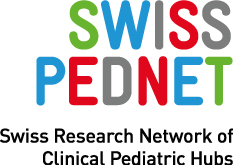

Genomic analysis allows our scientists to identify health concerns and discover new treatments.
funded by
in collaboration with

Welcome to SwissPedHealth, the Pediatric Personalized Research Network Switzerland. Our mission is to revolutionize pediatric healthcare by creating a seamless national data stream that enhances the quality of care for children across Switzerland.
Children are one of the most vulnerable patient groups, and their health is paramount to society’s well-being. At SwissPedHealth, we envision a future where the health data collected during children’s hospital visits can be securely harnessed to drive research, innovation, and ultimately, provide personalized care for our youngest patients. We believe that better health during childhood leads to healthier adults and future generations.
While significant advancements have been made in child healthcare in Switzerland, there remains a lack of robust evidence to guide diagnostics and therapies for children. Historically, children have often been excluded from medical research, leaving critical gaps in our understanding of how best to treat them. Additionally, the regional separation of hospitals in Switzerland has hindered the establishment of effective research networks for children.
SwissPedHealth is part of the Swiss Personalized Health Network (SPHN) and Personalized Health Related Technologies (PHRT) initiatives, supported by the Swiss Government. We are working towards a future where the wealth of data collected in daily pediatric practice can be leveraged for research. To achieve this, we are fostering collaboration between clinicians, researchers, scientists, and patients.
Our primary goal is to create a national data stream that integrates existing data from children’s hospitals in Geneva, Lausanne, Basel, Bern, and Zurich. This data stream will be built upon the foundation laid by SwissPedData, a standardized pediatric healthcare “dictionary” that defines the most relevant information collected during a child’s hospital visit. By combining this data with information from other sources, such as federal administration and registries, we aim to develop SwissPedHealth.
SwissPedHealth will revolutionize pediatric healthcare in Switzerland in several ways:
SwissPedHealth will demonstrate the power of our pediatric data stream through several research projects, including:
SwissPedHealth is led by Luregn Schlapbach (Kispi Zurich) and Julia Vogt (ETHZ). We are a multidisciplinary team that includes partners from SPHN, PHRT, and patient and public representatives. This collaborative effort ensures that we obtain and utilize pediatric data from hospitals, federal administration, and research in an organized, systematic manner.
At SwissPedHealth, we are committed to high-quality, patient-focused research that advances pediatric healthcare in Switzerland. Together with Swiss children and their families, we are shaping a healthier future for our youngest generation.
Pediatric personalized research network Switzerland (SwissPedHealth) – a joint pediatric national data stream.
Genomic analysis allows our scientists to identify health concerns and discover new treatments.

Machine learning is used to detect causes of disease more rapidly than traditional approaches and supplements the routine basic care which is provided in clinic.

Pediatric health promotes care during development, to provide a safe and secure environment, and have opportunities for learning starting from birth.